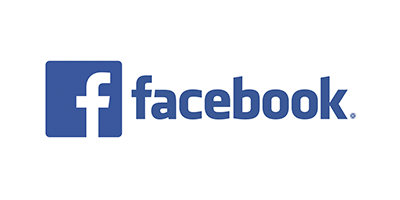

Social Media
- Social media are interactive technologies that facilitate the creation, sharing and aggregation of content (such as ideas, interests, and other forms of expression) amongst virtual communities and networks.[1][2] Common features include:[2]
- Online platforms that enable users to create and share content and participate in social networking.[2][3][4]
User-generated content—such as text posts or comments, digital photos or videos, and data generated through online interactions.[2][3]
- Service-specific profiles that are designed and maintained by the social media organization.[2][5]
Social media helps the development of online social networks by connecting a user's profile with those of other individuals or group.
TYPES OF SOCIAL MEDIA
- Facebook
- Youtube
- Instagram
- Twitter
FACEBOOK
Facebook is a social media and social networking service owned by American technology conglomerate Meta. Created in 2004 by Mark Zuckerberg with four other Harvard College students and roommates Eduardo Saverin, Andrew McCollum, Dustin Moskovitz, and Chris Hughes, its name derives from the face book directories often given to American university students. Membership was initially limited to Harvard students, gradually expanding to other North American universities.
Since 2006, Facebook allows everyone to register from 13 years old, except in the case of a handful of nations, where the age limit is 14 years.[6] As of December 2022, Facebook claimed almost 3 billion monthly active users.[7] As of October 2023, Facebook ranked as the third-most-visited website in the world, with 22.56% of its traffic coming from the United States.[8][9] It was the most downloaded mobile app of the 2010s.[10]

YOUTUBE
YouTube is an American online video sharing platform owned by Google. YouTube was founded on February 14, 2005, by Steve Chen, Chad Hurley, and Jawed Karim, three former employees of PayPal. Headquartered in San Bruno, California, United States, it is the second-most visited website in the world, after Google Search. In January 2024, YouTube had more than 2.7 billion monthly active users, who collectively watched more than one billion hours of videos every day.[7]
As of May 2019, videos were being uploaded to the platform at a rate of more than 500 hours of content per minute,[8][9] and as of 2021, there were approximately 14 billion videos in total.[9]

INSTAGRAM
Instagram[a] is a photo and video sharing social networking service owned by Meta Platforms. It allows users to upload media that can be edited with filters, be organized by hashtags, and be associated with a location via geographical tagging.
Posts can be shared publicly or with preapproved followers. Users can browse other users' content by tags and locations, view trending content, like photos, and follow other users to add their content to a personal feed.[8] A Meta-operated image-centric social media platform, it is available on iOS, Android, Windows 10, and the web. Users can take photos and edit them using built-in filters and other tools, then share them on other social media platforms like Facebook.
It supports 32 languages including English, Hindi, Spanish, French, Korean, and Japanese.[9]

TWITTER
Twitter was created in March 2006 by Jack Dorsey, Noah Glass, Biz Stone, and Evan Williams, and was launched in July of that year. Twitter grew quickly; by 2012 more than 100 million users produced 340 million tweets per day.[7] Twitter, Inc., was based in San Francisco, California, and had more than 25 offices around the world.[8] A signature characteristic of the service initially was that posts were required to be brief.
Posts were initially limited to 140 characters, which was changed to 280 characters in 2017. The limitation was removed for subscribed accounts in 2023.[9] The majority of tweets are produced by a minority of users.[10][11] In 2020, it was estimated that approximately 48 million accounts (15% of all accounts) were run by internet bots rather than humans.[12]